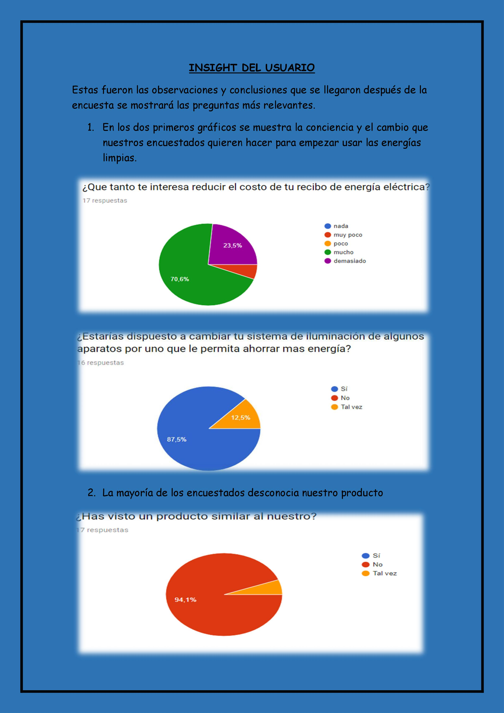

DEFINIR
1. Los avances tecnológicos y la velocidad de creación.Al utilizar un alternativa de energía ayudando al medio ambiente.
2. La globalización y la pérdida de ventajas geográficas. Nos enfocamos en que este producto no hay un mercado establecido en nuestro país solo paginas extranjeras para su distribución que varían su precio
3. El creciente poder de los consumidores y su capacidad de obtener lo que quieren, cuando quieren y cómo lo quieren. Este se informara a través de una página dando los detalles del producto desde su elaboración hasta su finalización para que se informen nuestros clientes.
4. La cantidad de información que podemos disponer hoy sobre nuestros clientes
Hoy en día la tecnología permite a un competidor del mismo producto y a un consumidor comprarlo en cualquier lugar del mundo. Actualmente, también aparecen nuevos competidores que no siempre provienen de la misma industria y ofrecen soluciones para los clientes de manera más rápida. Pero nosotros nos enfocamos en nuestro país ya que no tiene alto impacto esta nueva tecnología.
Insight del Usuario
Respuestas
En el presente documento se muestra las interfaces de la implementación de la aplicación a mano alzada , como también la descomposición funcional de cada interfaz.
Documento - Respuestas